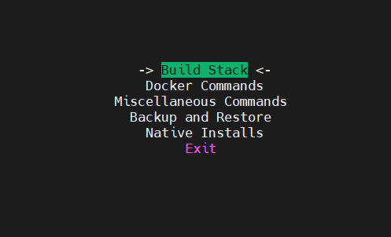
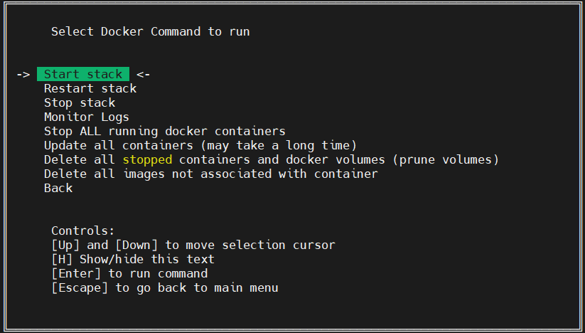
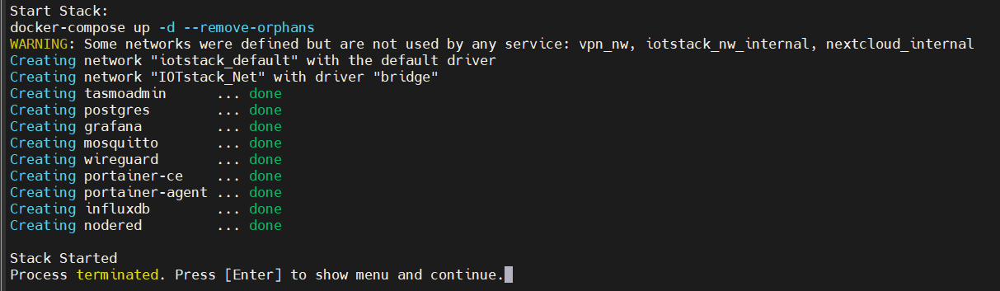
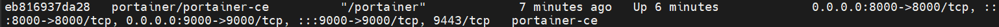
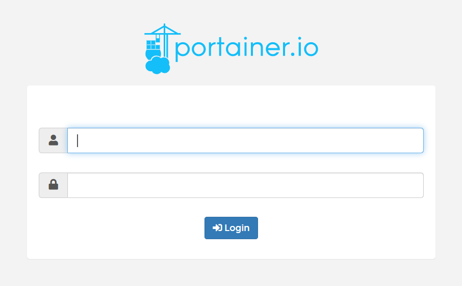
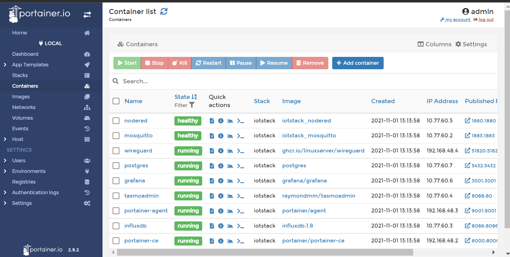

How to install IOTStack on Ubuntu and monitor all containers with Portainer.io
"Hackers rarely have full knowledge of the technology stack of a target." - John McAfee
Written by Henry Le on Oct 29, 2021
As I recently start projects on the term and found that open-source community already built a very completed stack that can do almost everything one can imagine to do with IoT. So this article I would like to share how can IoTStack be installed on Ubuntu. I tested the process on both Google Cloud Platform and my local server, so I believe that this instruction works just fine with anyone else have interests in start to have fun with IOTStack.
If you already have a RPI4 with you, the instruction of Andreas Spiess is a must-read.
Firstly, making sure you already have everything packages updated and upgrades with:
sudo apt update
sudo apt upgrade -y
And also curl if you are not sure that the package is already installed
sudo apt install curl
After having curl on your system, run the following command.
curl -fsSL https://raw.githubusercontent.com/SensorsIot/IOTstack/master/install.sh | bash
As default, a directory call /IOTStack will be created as your /home directory

As you may see, there are two script file, install.sh and menu.sh, install.sh is indeed the script file we curl from the link above. By invokinng install.sh, another directory tree of IOTStack will then created and the content will be cloned just as the same as the parent folder we see here.
Now, its time to see what we have in menu
cd ~
cd /IOTStack
./menu.sh

Using your arrow keys to navigate around the menu, Build Stack is the first place we need to visit
If you install IOTStack on a completely clean OS, without even docker installed, IOTStack will help you install the needed docker version.

If everything is running properly, a menu will be shown

Navigating aroung by arrow keys and choosing the docker images by typing space bar. In my case, I choose grafana, influxdb, mosquitto, nodered, portainer-ce, portainer-agent, postgres, tasmoadmin and wireguard.
At this point, you finished choosing your stack, assuming this is the first time you install IOTStack, there are no images or containers running in you system yet. The next step is making eveything up and running.
Choosing the second option in the menu.
There are several useful options in the Docker Commands menu, in this article I simply choosing Start Stack. The very first time building IOTStack might take a while because there are no existing images stored in your system yet. So for the first time, images of chosen option from the previous step will be automatically pulling to your system and then make it running.
So far so good, the Stack after built up will look just as below, if there are any errors occur, error message will let you know while building up the stack.

To check whether the docker images was pulled to your system, enter the following command
docker images
To check the running containers
docker ps -a
Monitoring all built container with portainer.io
If you try docker ps -a, by default you will see the container of portainer-ce is running with the IP exposed to outside. The port 9000 by default, is for administrators logging to the management webpage.

On your Web Browser (ie. Chrome, Firefox, etc). Enter localhost:9000/, this will open up the Web GUI of portainer-ce.

You will need to secure your admin account's password the first time you logging to the Portainer. After logging in, the existing images and running containers are all shown up for your monitoring. Portainer provides various command buttons so that you can easily manipulate the Stack to certain levels.

Basically, there are all the steps you need to operate when dealing with IOTStack for the first time, the result may different from time to time since the project IOTStack is actively updated by its contributors. By using the well prepared docker images of IOTStack, we save a lot of time from dealing with configuration. The heavy-lifting part is done for you so you can have more time spending on your business logic rather hours of configurating without knowing that they can work stably together.
Thank you for reading my clumsy article, for more real life projects about IOTStack you can refer to this Link.